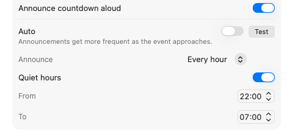
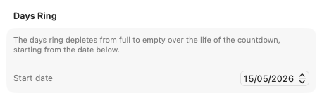
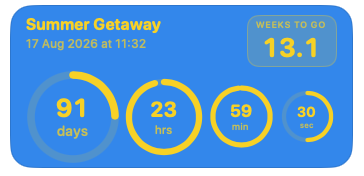

Common questions
How do I add a new countdown?
On your Mac, click the gear icon on any floating widget, or use the menu bar (⌘,) to open the Manage Countdowns panel. Click the + button to add a new countdown.
Is there an iPhone and iPad app?
Yes — Nearing is a single app for Mac, iPhone, and iPad. Install it on your iPhone or iPad, sign in to the same iCloud account as your Mac, and your countdowns appear automatically. You can view them in the app and pin them to your Home Screen as widgets.
Countdowns are created and edited on your Mac — the iPhone and iPad app is for keeping them in view wherever you are.
Can I run more than one countdown at a time?
Yes — free users can run up to three simultaneous countdowns. Nearing Premium removes that limit entirely.
How do I get the countdown spoken aloud?
Nearing can read your remaining time aloud using text-to-speech, adapting what it says based on the time left: reading weeks and days when the event is far off, down to hours, minutes, and seconds on the final day.

In the countdown settings, you have two scheduling modes:
- Auto Mode (Default): Announcements intelligently become more frequent as your event approaches (shifting from weekly, to daily, to hourly, right down to every minute in the final stretch). It also guarantees announcements on major milestones (1 week, 1 day, 1 hour to go).
- Manual Mode: Turn off "Auto" to set a fixed interval (e.g. Every day, Every hour). If you select "Every day", you can pick the exact time of day you want the announcement.
Quiet Hours: When using Manual Mode, you can enable Quiet Hours to prevent announcements during the night or while you are working.
Can I change when the Days Ring starts calculating from?
Yes. The large outer "Days" ring visually tracks the entire duration of your wait, depleting as your event gets closer. By default, this ring begins calculating from the moment you create the countdown.

Set any past date to anchor the start of your countdown.

The days ring depletes based on the total time between the start date and the event date.
If you've already been waiting a while before adding the event to Nearing, you can set a custom start date in the past. This ensures the visual progress of the Days Ring accurately reflects the true length of your wait. To do this, open your countdown settings and adjust the date under the "Days Ring" section.
What do I get with Nearing Premium?
Nearing Premium is a one-time, lifetime purchase that unlocks the full set of customisation options and removes the free-tier limits. Here is what is included:
- Unlimited countdowns: Free users can create up to 3 countdowns. Premium removes the limit, so you can track as many events as you like — birthdays, holidays, deadlines, launches, anniversaries — side by side.
- Every background colour: The free version comes in teal. Premium unlocks the full palette of 11 background colours, so you can match each countdown to the mood of the event — warm yellow for a holiday, deep indigo for a launch, classic black for a formal occasion.
- Rainbow and single-colour rings: By default, ring colours adjust automatically to suit the background. Premium adds two extra ring styles: a vibrant rainbow palette and a single-colour override, letting you fine-tune the look of each widget.
- Compact widget size: The standard widget shows four rings side by side. Premium adds a compact size — a smaller, square widget that highlights the headline number, ideal for tucking into the corner of your screen.
- Adjustable opacity: Free widgets are fully opaque. With Premium you can dial each widget's transparency up or down, so it blends gently into your desktop instead of dominating it.
- A cleaner interface: Upgrade prompts and reminders disappear once you're on Premium, leaving a tidier Manage Countdowns window.
A few other things worth knowing:
- It's a one-time purchase. No subscription, no renewals — buy it once and it's yours for good.
- One purchase covers everything. Nearing is a single app across Mac, iPhone, and iPad — buy Premium once and it applies everywhere.
- Family Sharing is supported. Anyone in your Family Sharing group gets Premium too.
- Restore on any device. Signed in with the same Apple Account? Just open the upgrade screen and tap Restore to bring your purchase across.
Note: Spoken countdown announcements, large-text mode, always-on-top, and the celebration animation when a countdown completes remain free and unchanged for everyone.
I bought Premium but it isn't showing as unlocked.
Open the Manage Countdowns panel and tap Restore Purchase at the bottom of the window. This syncs your purchase with the App Store and should unlock Premium immediately. If the problem persists, please get in touch below.
How do I change the language?
Open the Manage Countdowns panel (⌘,). At the bottom of the window there's a language picker. Changing the language requires a relaunch — Nearing will prompt you to restart automatically.
The widget disappeared from my desktop.
Nearing's Mac widgets are floating windows — they can sometimes end up off-screen if your display configuration changes. Open the Manage Countdowns panel, delete the affected countdown, and add it again. Your settings will need to be re-entered but the countdown will reappear.
Does Nearing work on multiple displays?
Yes — you can drag Nearing's widgets to any connected display. Their position is saved per-display when possible.
What does Nearing require?
Nearing requires macOS 13 Ventura or later on the Mac, and iOS 17 or later on iPhone and iPad.
Get in touch
Couldn't find what you needed above? Send us an email and we'll get back to you as soon as we can. It helps if you mention your macOS or iOS version and a short description of what's happening.